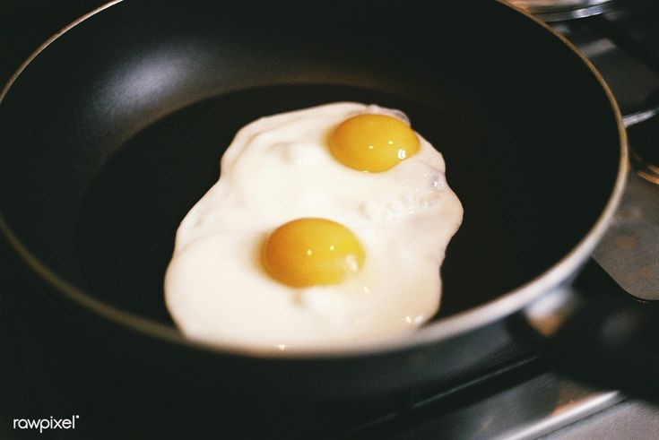

Fried Eggs Recepie

Gear
- ring cooker
- frying pan
- matching lid for frying pan
- table spoon
Ingridiants
- 2 large eggs
- tbs of olive oil
- tbs of tap water
- pinch of salt
- pinch of black peaper
- Put the pan empty on low heat.
- After a minute add the tbsp of olive oil,wait for another minute.
- Crack eggs and drop them in to the pan,make sure dosen't brake and that there is no shell in the eggs.
- Rait for a couple more minutes, add salt and peaper.
- Drop a the tbsp of water on the metal part of the pan, not on the eggs put the lid on the pan right away.
- Leave the pan on the heat for two more minutes, then remove pan from heat and leave for another minute.
- Remove the lid from the pan and serve eggs plain or on toasted breads.
- Remove